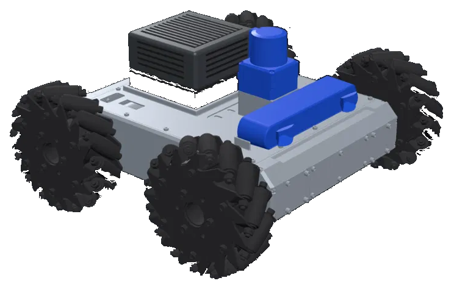

Helios, an autonomous mecanum rover
A four-wheeled mecanum rover that maps an indoor space, works out where it is in that map, and drives itself to a goal.
It sees with a 2D laser scanner and a stereo camera, steers around obstacles that were never in the map, and a gamepad can take over at any moment. Everything runs on one onboard computer.
- Built by
- Pranav Upadhyay, M.S. Embedded and Cyber-Physical Systems, UC Irvine
- Computer
- NVIDIA Jetson AGX Orin
- Middleware
- ROS 2 Jazzy
- Sensors
- Hokuyo UST-10LX laser, ZED 2i stereo camera
- Mapping
- slam_toolbox, RTAB-Map
- Localization
- AMCL
- Navigation
- Nav2 with Smac planner and MPPI controller
Meet Helios
An indoor rover that maps a space, knows where it is in it and drives itself, with enough computing on board to run AI models. It is built from off-the-shelf parts on open-source robot software.

- NVIDIA Jetson AGX OrinThe only computer. Mapping, navigation and the AI model all run on the rover.
- Hokuyo UST-10LXIndustrial laser scanner, 270° out to 10 m.
- Stereolabs ZED 2iStereo depth camera with an IMU, for 3D obstacles and visual odometry.
- Mecanum wheelsAngled rollers let it slide sideways and turn on the spot.
- Lynxmotion A4WD3 chassisFour 12 V gearmotors, driven by two RoboClaw controllers.
Autonomous from day one
Builds a map, knows where it is and drives itself to any spot you choose.
Edge: skips months of setup
Goals in plain language
“Go to the blue chair”, or a photo of the goal. The AI model runs on the robot. In development
Edge: no cloud, no extra PC
Moves in any direction
Mecanum wheels slide sideways and turn on the spot.
Edge: built for tight spaces
Open and upgradeable
Built on ROS 2, the software most robotics labs already use; parts are swappable.
Edge: easy for labs to adopt
Built and tested
Three runs filmed from the floor, sped up to fit. Nobody is steering.
Watch it drive itself
The rover on the left; on the right, what it sees and plans in RViz, with the onboard camera in the corner. About two and a half minutes.
- Map: open floor, walls, unseen
- Planned path
- Robot footprint
- Live laser returns
- Costmap: obstacles plus safety margin
Eight runs, four kinds of problem
Every run is autonomous. A goal is set in RViz, Nav2 plans the route, and the rover drives it, using the laser and camera to avoid obstacles along the way.
Hover a run for a sped-up preview. Open it for the full video.
How the stack fits together
Four sub-stacks of ROS 2 nodes, all on the Orin. Data flows from the sensors to the motors, and the rover’s own motion feeds straight back into the sensors. Select a sub-stack to see inside it.
- Data topic
- Velocity command
- Coordinate transform (TF)
- Hardware
- In development
Perception: how am I moving?
Three sensors, two independent estimates of motion, one fused answer. Wheels slip and the camera loses track on blank walls, so an extended Kalman filter blends the two into one smooth estimate, 30 times a second.
Scroll sideways to see the whole diagram.
The camera reported its speed with no uncertainty
The ZED driver publishes velocity with an all-zero covariance and no setting to change it. The EKF read that as perfect certainty and let the camera overwrite the wheels. A small node now republishes it with a realistic covariance, so the two are genuinely blended.
One owner per transform
Wheel odometry and the ZED driver both have transform publishing switched off. They still report measurements, but only the EKF states where the robot is, so its position never flickers between two answers.
Vendor drivers stay untouched
The ZED and Hokuyo drivers are pinned git submodules. Helios’s settings live in small packages beside them, so updating a driver can never silently undo a tuning change.
Mapping and localization: where am I?
Odometry is smooth but drifts forever. A map never drifts, but its corrections arrive in jumps. Helios keeps both as two coordinate frames, and exactly one mapper at a time owns the correction between them.
Scroll sideways to see the whole diagram.
2D map with slam_toolbox
Laser scans turned into the 2D map as the rover drives, with the ZED’s 3D point cloud drawn over it. 55 seconds.
3D map with RTAB-Map
The ZED 2i’s depth and colour plus the Hokuyo scans, built into a 3D model of the lab and corridor over a 139 m drive, then cleaned up and exported. A few stray depth scans still need correcting. 1 minute 45 seconds.
Smooth to steer by, correct to plan with
The EKF owns odom → base_link, which never jumps, so the controller can steer by it. The mapper owns map → odom, which removes the drift, so the planner can trust it. Nothing ever publishes the same transform twice.
It finds itself when it gets lost
amcl_recovery watches AMCL’s confidence. If the estimate stays poor for 5 seconds, the rover turns on the spot and drives short legs picked from the live costmap until it tightens, and scatters its guesses across the whole map if that fails.
It knows when it has been picked up
Comparing wheel speed with camera speed tells it when it is being carried: the camera moves, the wheels don’t. It relocalizes once set down, and stops a recovery drive if the wheels spin while the camera sees no motion.
Control and safety: who gets to drive?
There is exactly one way into the motors. The driver listens to /cmd_vel and nothing else, and only twist_mux publishes it. Everything that wants the rover to move publishes on its own topic, and the mux forwards the highest-priority one that is still talking.
Scroll sideways to see the whole diagram.
Four independent ways it stops
Each layer covers a failure the one above it cannot. Distances are from top speed, 0.40 m/s.
| If | Then |
|---|---|
| You press the stop button | estop_node sends zero velocity at priority 250, above everything else. The rover stops in about 9 cm. |
| The safety node crashes | Its 20 Hz “clear” heartbeat goes quiet, and twist_mux locks out driving after 0.5 s. |
| Commands stop arriving | The driver’s watchdog ramps the wheels to a stop after 0.5 s, in about 28 cm. |
| The driver crashes or the serial link hangs | The RoboClaws’ own deadman, armed over serial at startup, cuts the motors after 0.3 s: about 12 cm of coasting. |
Specifications
Mecanum wheels have free-spinning rollers set at an angle, so driving the four wheels at different speeds moves the rover sideways as well as forward and around, without turning first.
Platform
- Chassis
- Lynxmotion A4WD3, four mecanum wheels
- Drive
- 152 mm wheels, 12 V motors, 51:1 gearboxes
- Footprint
- 0.38 × 0.38 m
- Top speed
- 0.40 m/s forward or sideways, 0.8 rad/s turning
- Computer
- NVIDIA Jetson AGX Orin, nothing off board
- Power
- 3S LiPo, 11.1 V
- Manual control
- 8BitDo SN30 Pro gamepad over Bluetooth
Sensing
- Laser scanner
- Hokuyo UST-10LX, 270° out to 10 m, Ethernet
- Stereo camera
- Stereolabs ZED 2i with IMU, 30 Hz, USB 3
- Depth cloud
- 10 Hz, obstacles from 36 mm off the floor
- Wheel encoders
- 2448 counts per wheel turn, read at 30 Hz
- Motor controllers
- 2 × RoboClaw over USB serial, each with its own deadman
Autonomy
- Middleware
- ROS 2 Jazzy, Nav2
- State estimate
- EKF at 30 Hz from wheels and visual-inertial odometry
- Mapping
- 5 cm 2D grid with loop closure; 3D maps with RTAB-Map
- Localization
- AMCL, 500 to 5000 particles, recovers on its own
- Planning and control
- Smac 2D planner; MPPI, 1000 trajectories at 20 Hz
- Learned navigation
- OmniVLA-edge, 108 M parameters, 95 ms per step on the Orin (in development)
Every node on this page is open source
Launch files, configs and a README for each package explaining why it is built the way it is. Apache 2.0.